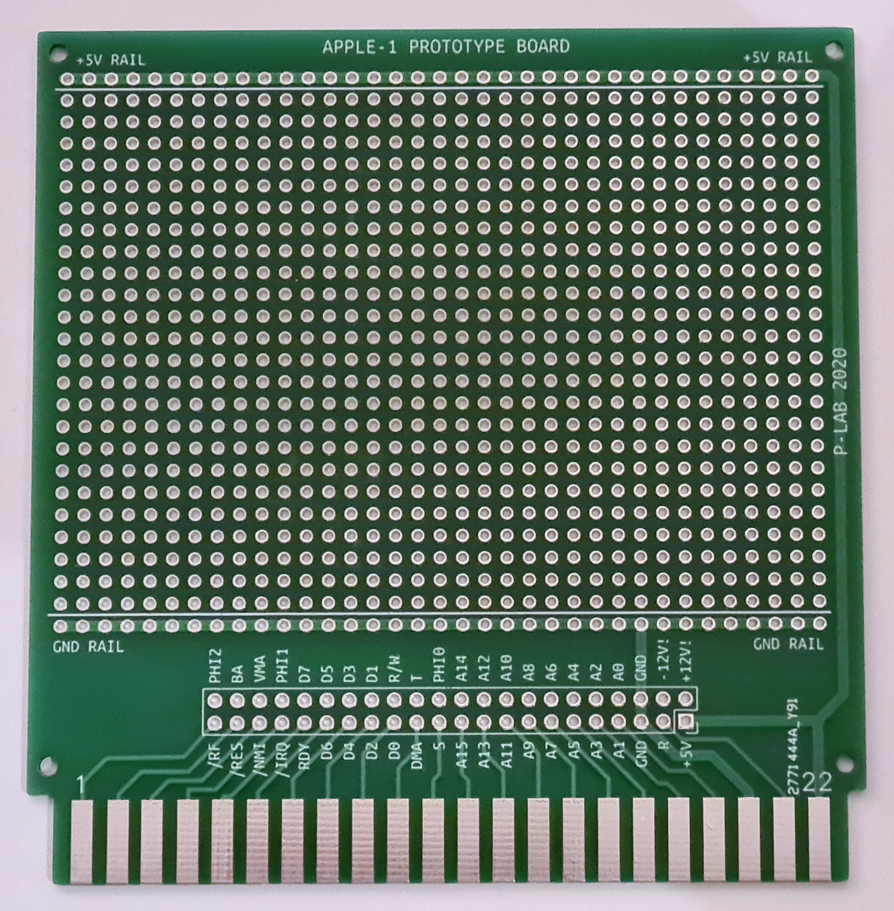

APPLE-1 PROTOTYPING BOARD
Documents hosted here:
PROJECT DOCUMENTATIONGerber File [zip]
NOTES:
-
On the header connector the sequence of the signals is the same of the edge connector EXCEPT the unregulated +12V/-12V power lines.
They appears "reversed" compared to the edge connector. This has been made to preserve the thickness of the tracks without using "vias" and is not an error.
The markings on the PCB are accurate. - PCB takes also into account the reversal of "R" and "T" signals in the original schematic. The markings on the PCB are accurate.
This work is licensed under CC BY 4.0